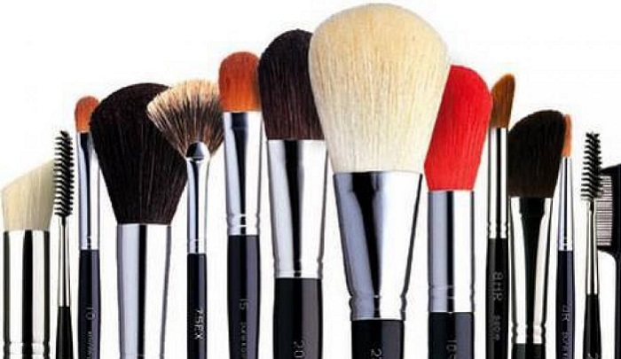
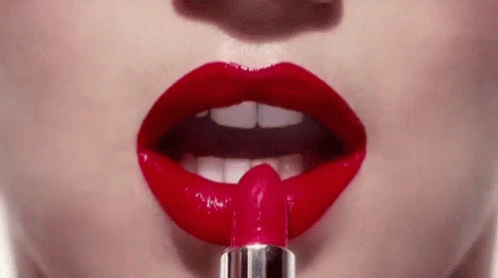
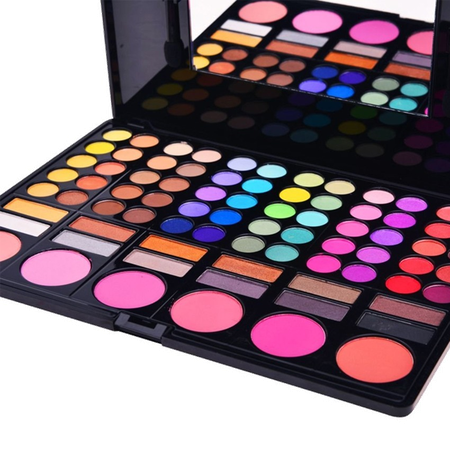

Damiselas Jen El maquillaje es la práctica de decorar la piel y otras partes visibles del cuerpo para resaltarlas.
También se define como maquillaje todo producto usado para decorar o arreglar rasgos faciales o corporales de una persona; este se compone de diversos elementos En las artes se emplea también para corregir las distorsiones producidas por la iluminación o para caracterizar a un actor o actriz como un personaje teatral específico con funciones determinadas para cada parte (ojos, labios, cejas, pestañas, Entre Otros).Designa también los cosméticos que se emplean para esta práctica, tales como los lápices de labios y sombras de ojos. También se usa para ocultar algunas heridas u otros problemas en la piel. Además de minimizar la pérdida de color, ayuda verte mas feliz y radiante.


